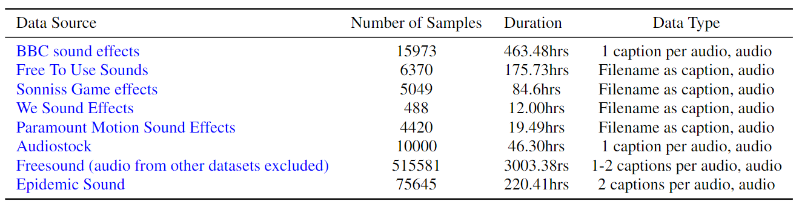
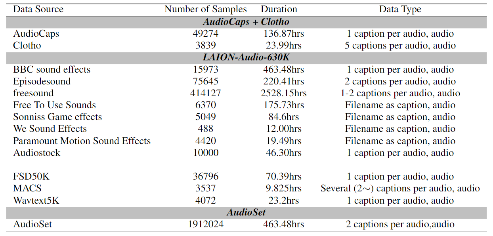
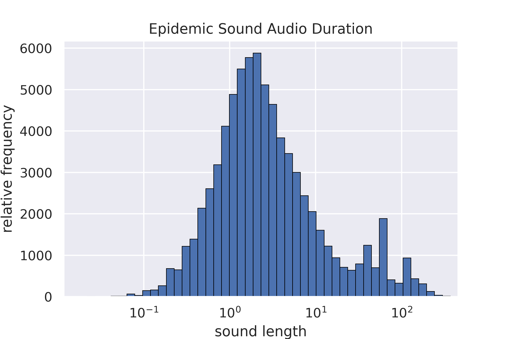
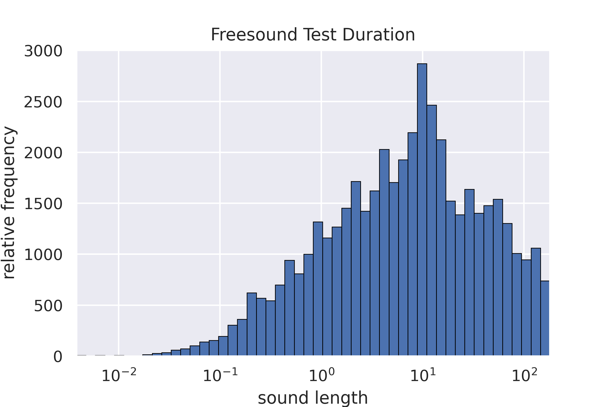
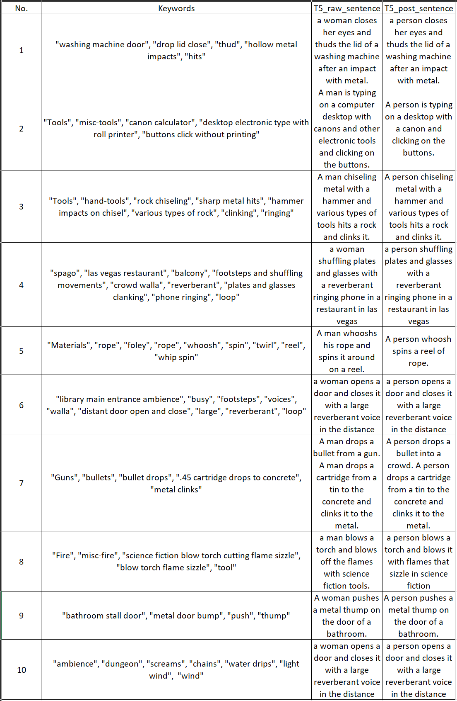
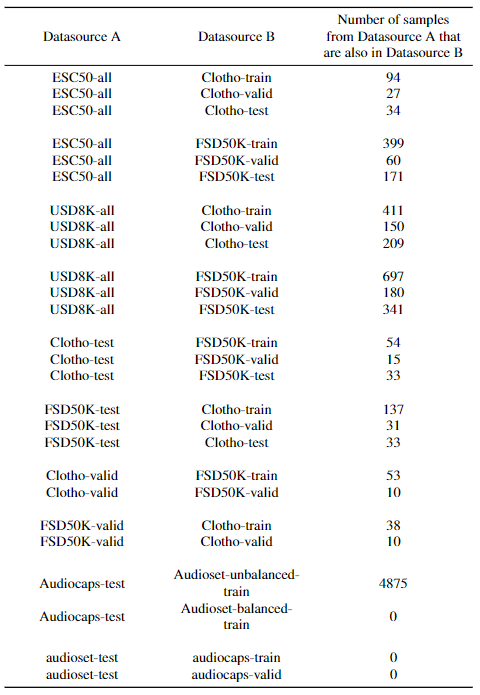

Large Scale Contrastive Language-Audio Pretraining with Feature Fusion and Keyword-to-Caption Augmentation
In this page, we give additional introductions to our submission paper of ICASSP:
(1) Some detail information of the proposed dataset LAION-Audio-630K, and training settings during the experiment stage.
(2) Some examples of keyword-to-caption augmentation by the T5 text generation model.
(3) Some additional experiments and analysis, which are not the main part of the paper but contributes to our conclusion.
Due to the page limit, we are not able to include above information in the paper. We appreciate the checking of this appendix page if reviewers find it avaiable and valuable to know more information about the submission.
Details of LAION-Audio-630K
Regarding the section 2.1 and section 2.2 of the submisson:
(1) We list the specifications of website/sources from which we collect the audio samples and text captions for LAION-Audio-630K in Table 1.
(2) We list the detail of three datasets in Table 2. We use the combination of them to train the model in the section 4 of the submission.
More details can be find at https://github.com/LAION-AI/audio-dataset/tree/main/laion-audio-630k.

Table 1: the composition of the proposed dataset LAION-Audio-630K.

Table 2: the detail of training datasets.
Regarding the section 3.4 of the submissin, we present the distribution of audio length on Epidemic Sound and Freesound, as parts of LAION-Audio-630K, to demonstrate the existence of variable-length problem in audio data processing and model training.

Figure 1: the audio length distribution of Epidemic Sound.

Figuer 2: the audio length distribution of Freesound.
Examples of Keyword-to-Caption Augmentation
Regarding the section 3.5 of the submission, we show some examples of keyword-to-caption by T5 model from AudioSet labels. And the de-biased version for the model training.

Table 3: examples of keyword-to-caption augmentation from AudioSet labels and the de-biased version for the model training.
Experiment Settings
Regarding the section 4.3 of the submission, We excluded all the overlap samples and perform zero-shot evaluation on the whole remaining dataset. The below table shows the detail of it.

Table 4: The overlaps between the training data and the zero-shot evaluation data, we excluded all these overlaps from the evalation sets to calculate the audio classification metrics.
Acknowledgement
Yusong Wu, Ke chen, Tianyu Zhang are opensource contributors to LAION projects.
Our codebase is build on following open-source projects:
(1) PANN(2) HTSAT(3) open-clip(4) PyTorch
We would like to thank the support of computation infrastructure from LAION, Stability.ai and Summit cluster from Oak Ridge National Laboratory.
We would like to thank [TODO, real name] Christoph, Richard, rom, Irina, as this project would not be possible without them.
We would like to thank all the community contributors for contributing the collection of LAION-630k dataset.
Those community contributors include but not limited to: [TODO Yuchen]. We would like to thank Xinhao Mei for explaining and helping on retrieval metrics.